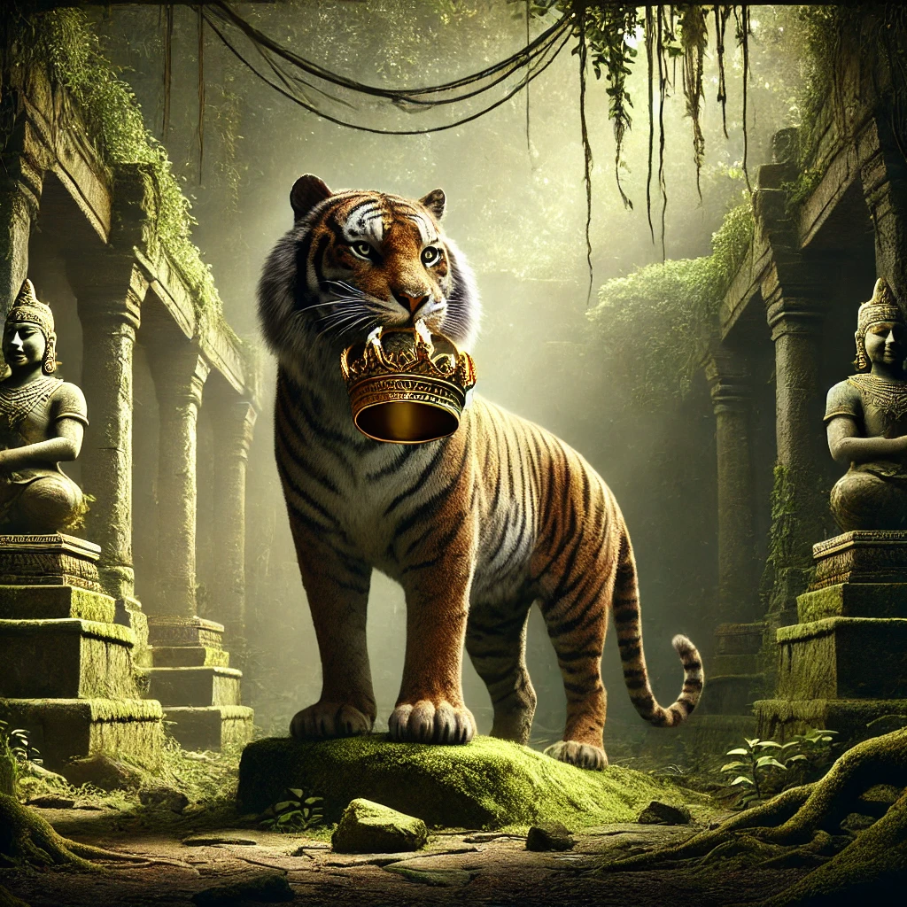
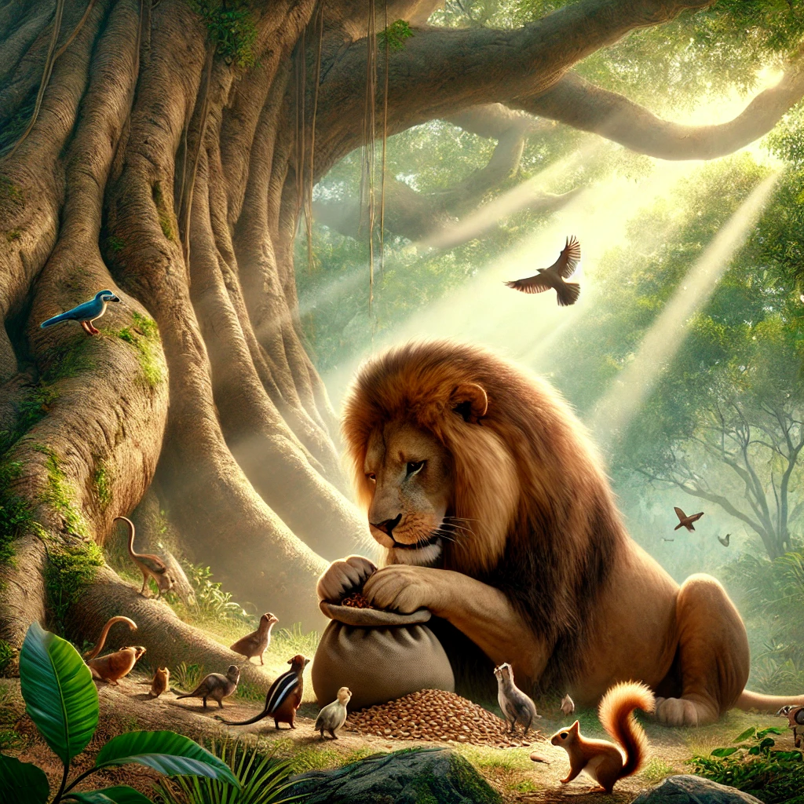
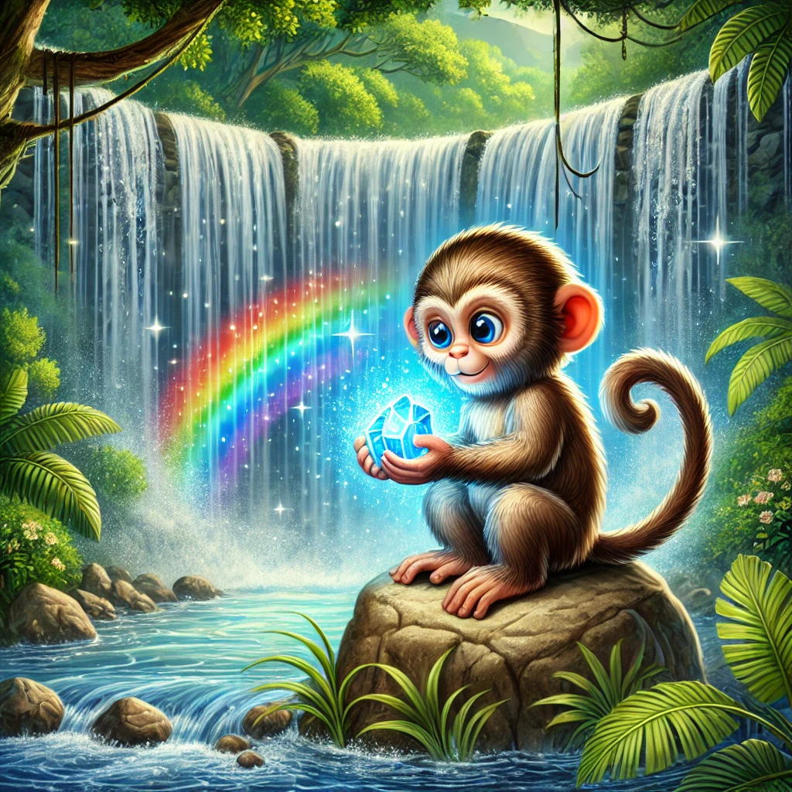

The Jungle Pact: A Tale of Leadership and Unity
Chapter 1: The Jungle’s Call
Deep in the heart of a lush green jungle, Taran, a strong and fearless tiger, roamed his territory. His amber eyes scanned the horizon as his paws crunched over dry leaves. Taran was the embodiment of power, respected and feared by all. Yet, he wondered, "Am I fit to lead the jungle?"
Far away, Leo, the wise lion and current king of the jungle, sat beneath a colossal tree. His mane was graying, and his steps had grown slower with time. Leo had ruled with fairness and compassion for years, but the animals whispered: "Who will lead us when Leo can no longer reign?"
Swinging between the trees was Miko, a lively monkey known for his quick wit and boundless energy. Watching Taran and Leo from above, Miko grinned and said to himself, "These two need my help."
One day, Taran confronted Leo at the Great Meeting Rock.
"Leo," Taran growled, "your time as king has passed. Let someone younger and stronger lead."
Leo, unshaken, replied, “Strength is important, but leadership demands more than that. Wisdom and compassion are equally vital.”
Before the argument could escalate, Miko leapt down from the trees. “Hold on, you two,” he said, scratching his head. “Why fight when we can settle this with a challenge? Each of you will search the jungle for the greatest treasure. Whoever finds the most valuable gift will lead the jungle.”
Leo and Taran agreed, and the jungle buzzed with excitement.

Chapter 2: The Great Treasure Hunt
At sunrise, the three set off in different directions.
Taran ventured deep into the jungle, where ancient ruins lay hidden beneath moss and vines. His sharp instincts led him to a secret chamber guarded by crumbling stone statues. Inside, he discovered a dazzling golden crown, its brilliance reflecting his strength and ambition.
“This will show the animals my worth,” Taran thought as he carried it back.
Leo made his way to the tallest tree in the jungle, a tree known to produce rare seeds that could grow into fruit-bearing plants. Carefully, he gathered a handful of seeds, his mind on the future.
“These seeds will ensure food for all. True leadership means thinking ahead,” he mused.
Miko, ever the adventurer, found himself by a shimmering waterfall. Behind the cascading water, he spotted a glowing blue gemstone. It sparkled with an inner light, as though it held the jungle’s very spirit.
“This isn’t just a treasure—it’s a symbol of unity,” Miko said with a smile.

Chapter 3: A New Era
The animals of the jungle gathered around, their eyes wide with curiosity.
Taran stepped forward, placing the golden crown on the rock. “This crown represents my strength and courage. I will protect the jungle with all my might.”
Leo presented the seeds. “These seeds represent hope and survival. With them, I can ensure our future.”
Finally, Miko held up the glowing gemstone. “This gem represents unity. Alone, we are strong, but together, we are unstoppable.”
The animals murmured among themselves, impressed by all three treasures. After a long discussion, they reached a decision.
“Taran, Leo, and Miko,” an old elephant declared, “each of you brings something unique. The jungle doesn’t need one leader—it needs all three of you to guide us with strength, wisdom, and creativity.”
From that day on, the jungle thrived under the trio’s leadership. Taran guarded the land with unmatched bravery. Leo ensured fairness and foresight. And Miko brought joy and innovation to every corner of the jungle. Together, they proved that true leadership comes not from power alone, but from unity and understanding.
